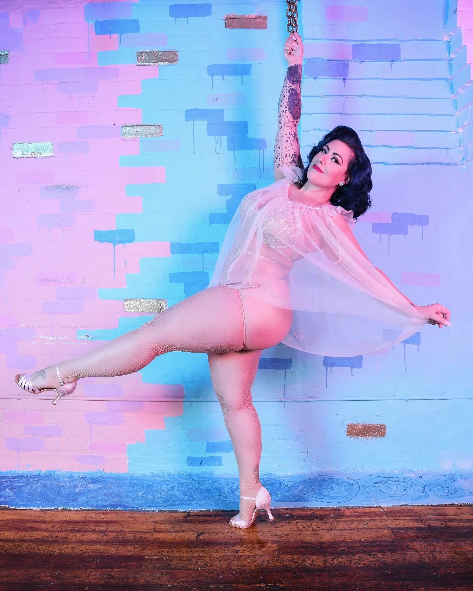
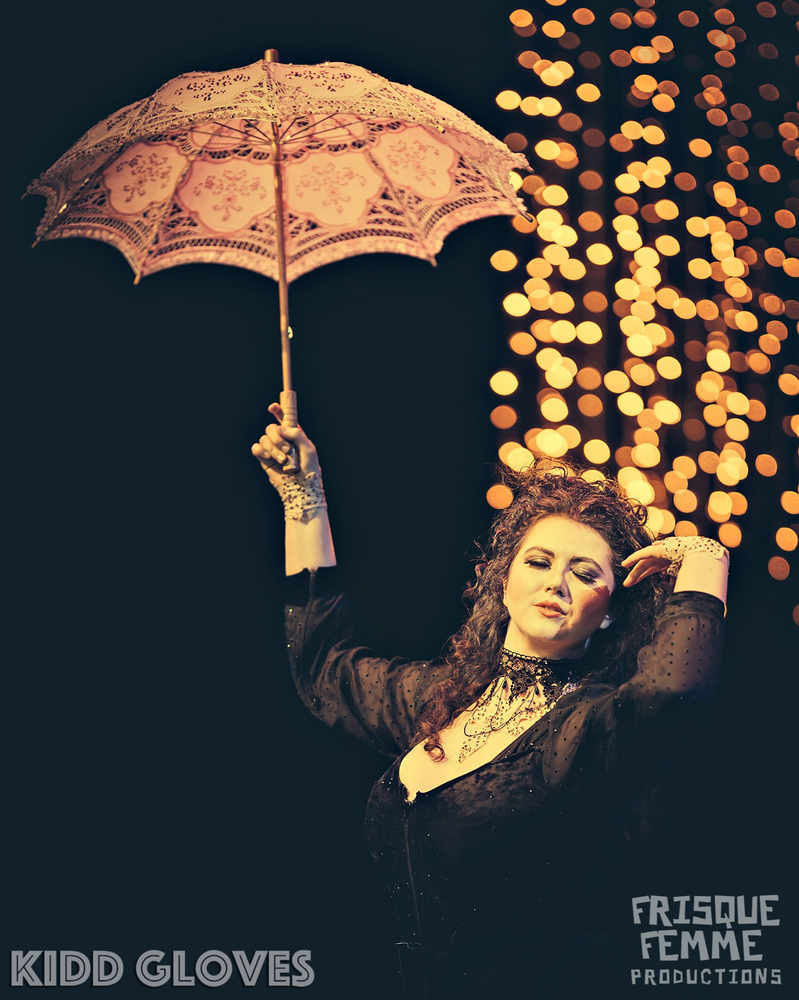
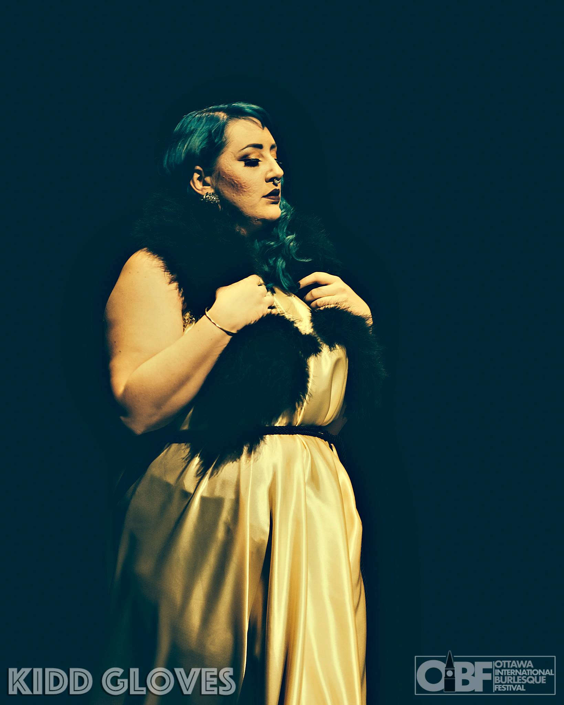

The Ottawa Burlesque Academy is Ottawa's elite school of burlesque. It is a place to create, learn and release your inner showgirl. You will learn the art of tease by building body confidence, learning dance technique, and burlesque moves for your performance.
The Instructors

Headmistress Kitty Kin-Evil
In her 12th year of burlesque indigenous femme Kitty Kin-Evil is the headmistress of Ottawa Burlesque Academy. Director of Frisque Femme Productions, Producer of "The Rump Revue", the first official chapter of The Original Burlesque Bingo, and Fabricator of Evil Embellishments. Known as " The Superior Posterior" she specializes in classic, comedic burlesque, aerial hoop artistry and showgirl fans.
She's the first performer from Ottawa to be accepted at The Burlesque Hall of Fame weekender, headlined Imperial Burlesque Competiton, The Humboldt Burlesque Expo in California, Salt City Burlesque in New York, Esoteric Bazaar in Calgary, featured at Colorado Burlesque Festival, Salt City Burlesque Festival,Vermont Burlesque Festival several years in a row, graced the stages of Viva Las Vegas Rockabilly Weekender for 8 years now, performed at The New York Burlesque Festival, The Capital Burlesque Expo, VLV Rockabilly Weekender Burlesque Competition, Isle of tease festival in Victoria, Minneapolis Burlesque Festival, Montreal Burlesque Festival, Edmonton Burlesque Festival, Montreal's Red Hot and Blue Rockabilly Weekend, and The Everything To Do With Sex Show.

Lolo Merlot
Lolo has been performing burlesque for over 8 years. Not only is she one of Basement Burlesque’s producers, but she is the host of (almost) every show! Lolo is staple to the Ottawa Burlesque scene both in and off stage. She is full-bodied and sure to make you blush.
She also dabbles in the science of Swarovski by day as professional gemologist and sparkles on the stage by night as a burlesque performer.
Lolo is a classically trained dancer. Known as the full bodied red of burlesque; watch enough of her and she is sure to make you blush.

Robyn Ravenous
This insatiable, unbridled babe will bump and grind for hoots, hollers and tips! Lock eyes with her for a full trip to Paradise, as she shimmies her way into your fantasies.
This insatiable, unbridled babe will bump and grind for hoots, hollers and tips! Lock eyes with her for a full trip to Paradise, as she shimmies her way into your fantasies. This insatiable, unbridled babe will bump and grind for hoots, hollers and tips! Lock eyes with her for a full trip to Paradise, as she shimmies her way into your fantasies.